Components
47 components, each with its guidelines and a live preview you can switch between the Day and Bedtime themes. In code they come from bundle.js (React, on window.Kheelona) and bundle.css.
Brand
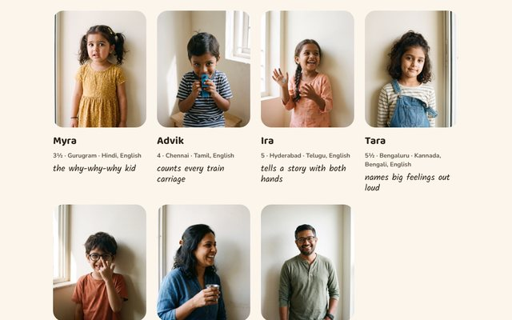
CastCardA portrait card for one member of the Kheelona cast: photo, name, age, city, home languages and a handwritten trait.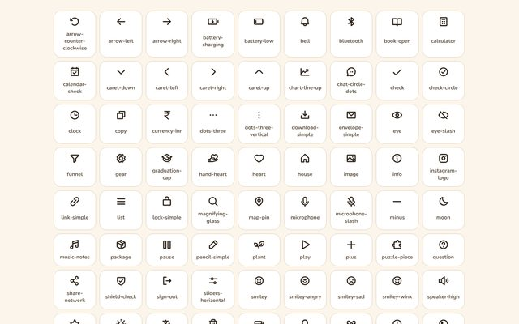
Icon76 Phosphor Bold icons drawn with currentColor, sized in em.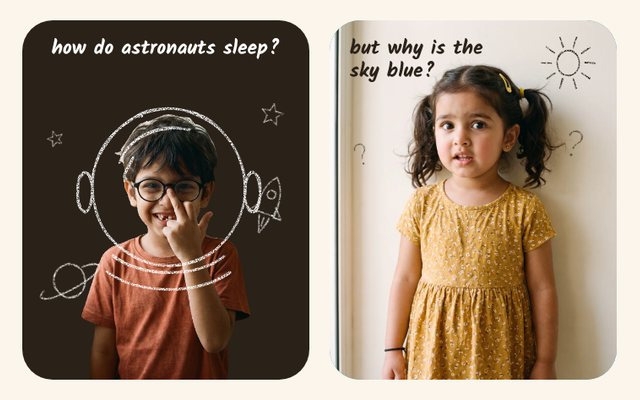
ImaginationFrameKheelona's signature: a child with chalk (or ink) doodles of the idea they are thinking about, and their question handwritten above.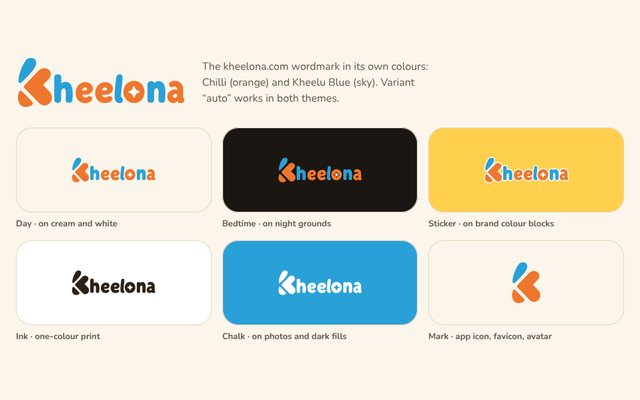
LogoThe official Kheelona wordmark, flattened from kheelona.com/brand/kheelona-wordmark.svg in its own colours: Chilli, the logo's orange (#EF762F), for the K, e, e, o and a, and Kheelu Blue, the logo's sky blue (#29A0D7), for the K's ear, h, l and n.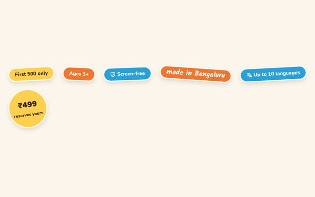
StickerA tilted, white-outlined label that feels stuck on by hand: ages, offers, badges and short shouts.Actions
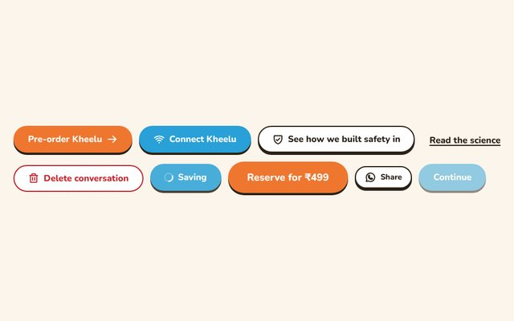
ButtonThe pill button with a chunky toy-like base edge.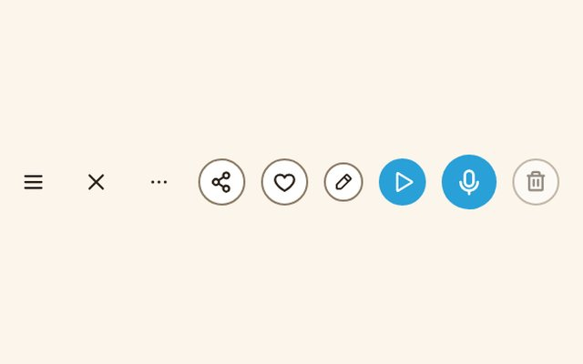
IconButtonA round, icon-only button for compact, well-known actions: close, menu, more, share, play.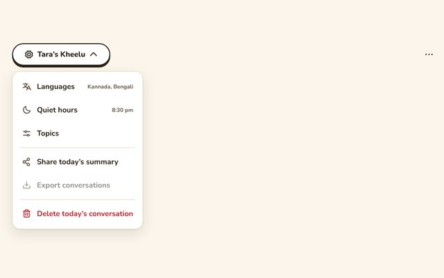
MenuA button that opens a short list of actions, with keyboard support: arrow keys, Home and End move through items, Escape closes and returns focus, and clicking outside closes it.Forms
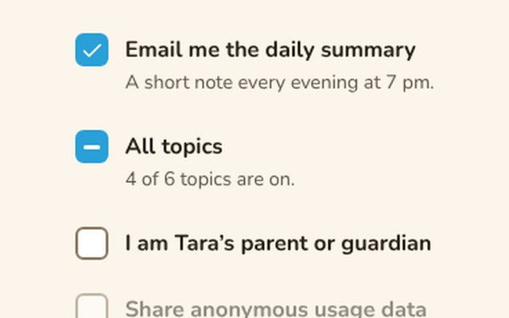
CheckboxA 24px checkbox with a 48px tap row, an optional hint, and an indeterminate (dash) state for "some of these".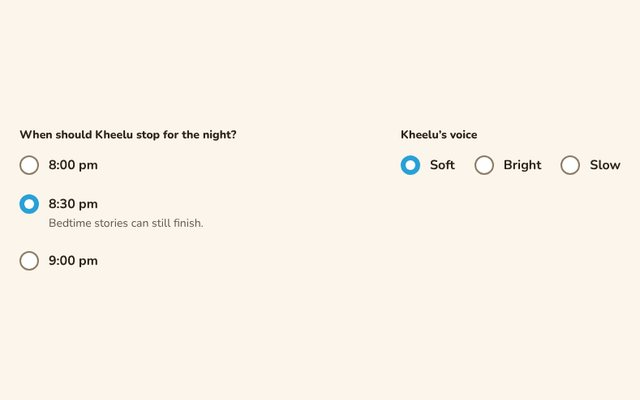
RadioGroupA labelled set of radio buttons (a native fieldset) for choosing exactly one option, stacked or inline.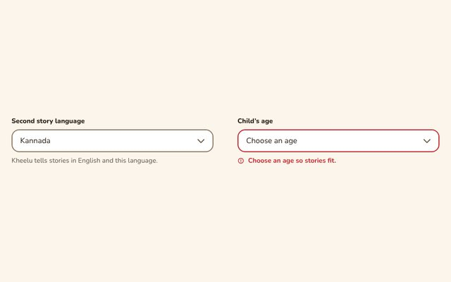
SelectA native dropdown styled to match the text field, with a caret and the same label, hint and error pattern.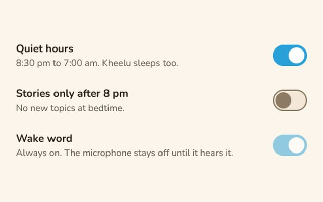
SwitchA labelled on/off row with the switch at the end.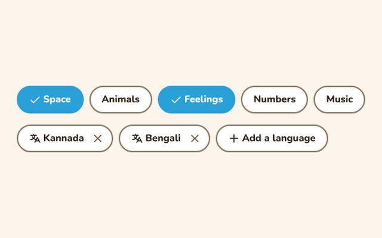
TagA rounded chip that can be toggled (filters), removed (chosen values) or just shown.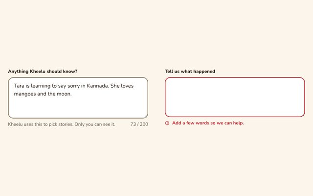
TextAreaA multi-line field with a label, hint or error, and an optional character counter.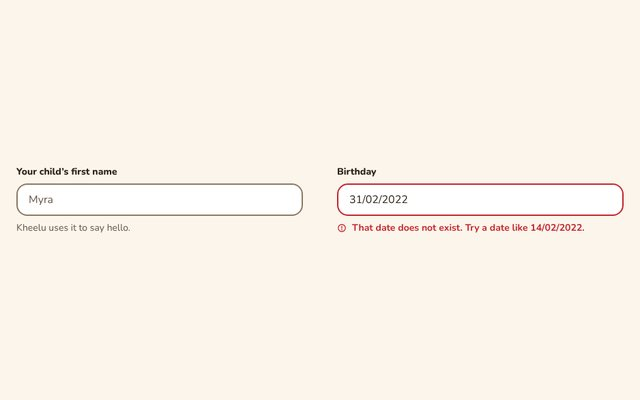
TextFieldA labelled input with a hint or error underneath, and a 48px tap height.Navigation
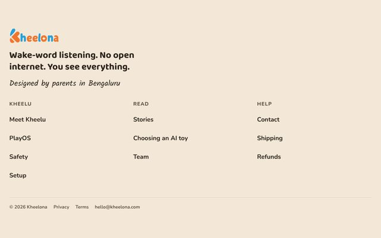
FooterThe site footer on surface-band: the logo (40px), the promise line, "Designed by parents in Bengaluru", link columns and legal links.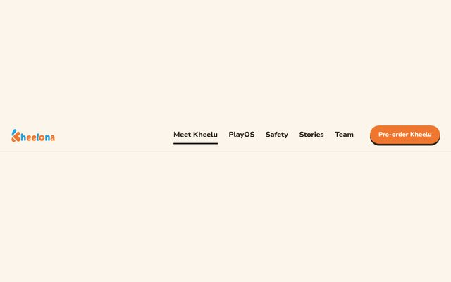
NavBarThe site header: the Kheelona logo, up to five links and a small chilli Pre-order button.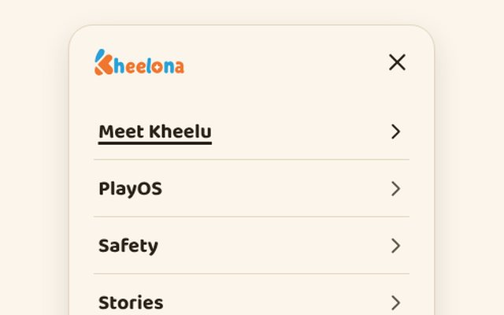
NavDrawerThe phone menu: a panel that slides in from the right with the logo, the site's links in Baloo 2, and the Pre-order button pinned at the bottom.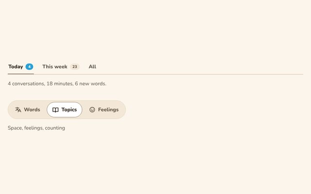
TabsSwitch between views of the same content without leaving the page, as underlined tabs or a pill-shaped segmented row.Content
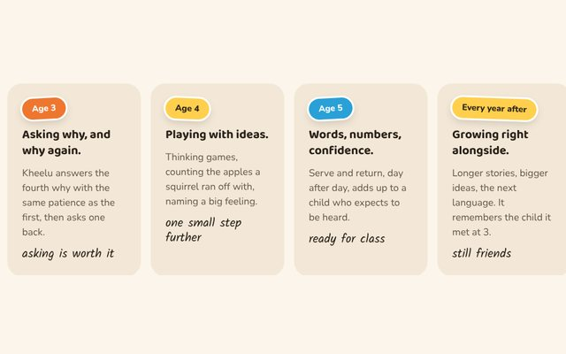
AgeTimelineFour cream cards that show what Kheelu does at age 3, 4, 5 and every year after, each with an age sticker and a handwritten note.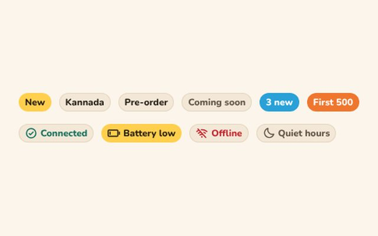
BadgeA small pill that labels a status or a category, in soft (cream with a hairline) or solid style.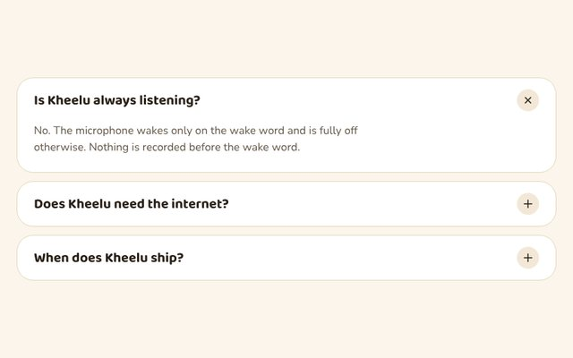
FAQRounded accordion items built on native <details>, with a plus sign that turns into a cross.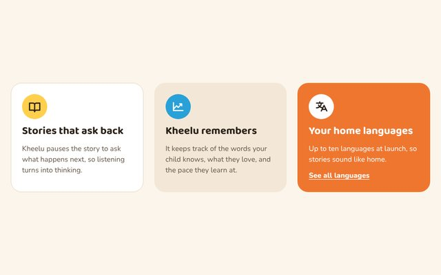
FeatureCardA rounded card with a brand-colour icon circle, a title and one or two sentences, in three strengths: plain (white), tint (the cream band) and block (a brand fill).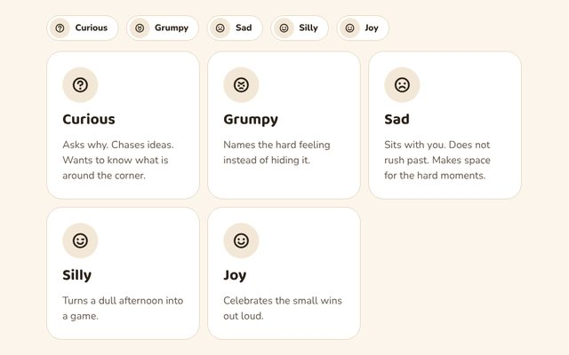
FeelingChipKheelu's five feelings (Curious, Grumpy, Sad, Silly, Joy) as a compact chip or a card with its description.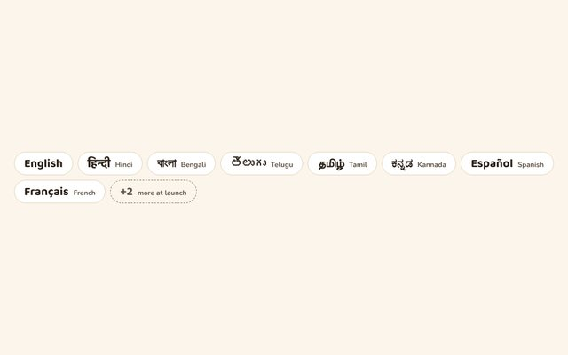
LanguageChipsEach home language in its own script with its English name, plus a dashed "coming" chip.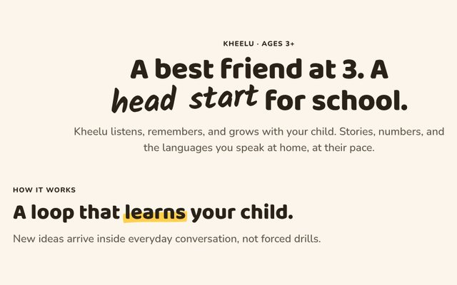
SectionHeadingThe headline block for every section: eyebrow, Baloo 2 headline with at most one handwritten phrase or crayon mark, and a Nunito lead.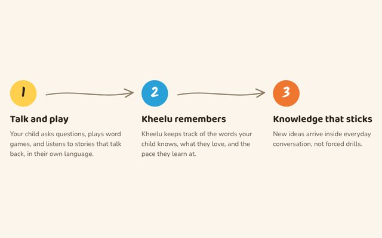
StepLoopThree numbered steps with handwritten numerals and drawn arrows: the "how it works" loop.Feedback
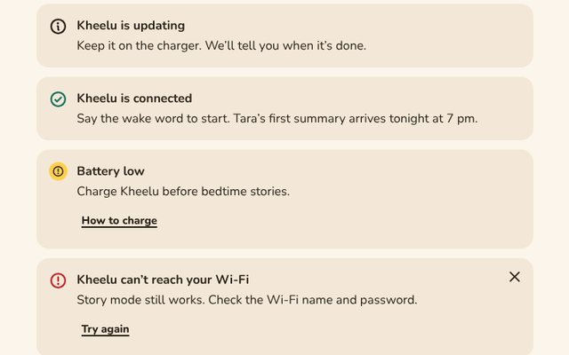
AlertAn inline notice inside the page, with an icon, a title, one or two sentences and an optional action.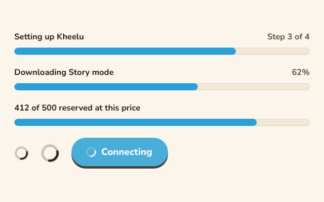
ProgressBarProgressBar shows how far a known task has got.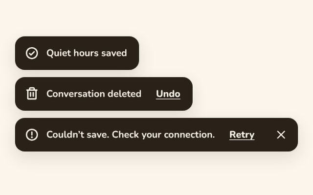
ToastA short, inverted message that floats at the bottom of the screen after an action, with an optional Undo.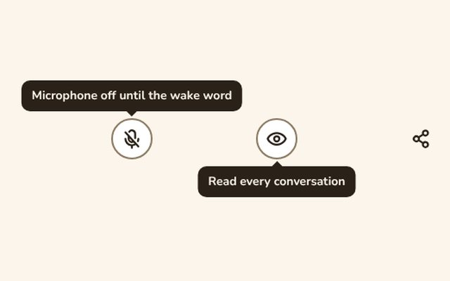
TooltipA small inverted label that appears on hover or keyboard focus, above or below its trigger.Overlays
App
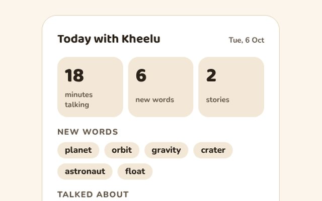
AppSummaryCardThe parent app's "Today with Kheelu" card: minutes, new words, stories, the topics talked about, one shared activity and a link to the full conversation.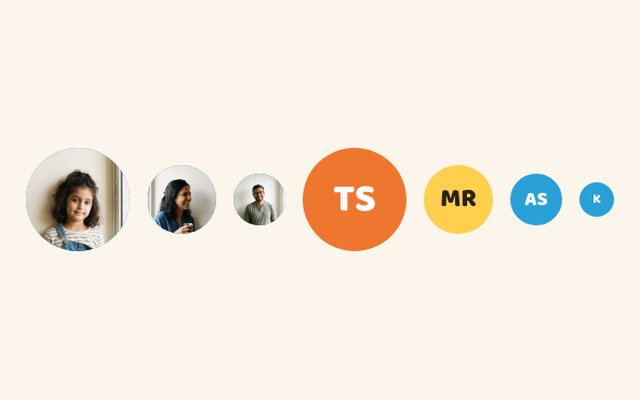
AvatarA round photo or initials badge for children, parents and Kheelu in the parent app.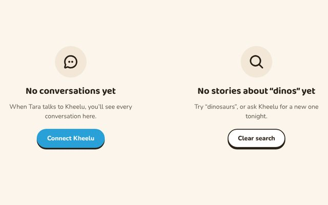
EmptyStateWhat a screen shows when there's nothing in it yet: an icon in a soft circle, a title, one helpful sentence and the next step.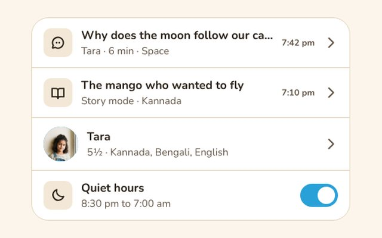
ListItemRows for lists of conversations, stories, children and settings: an icon tile or avatar, a title, a subtitle, meta text and a trailing chevron, switch or button.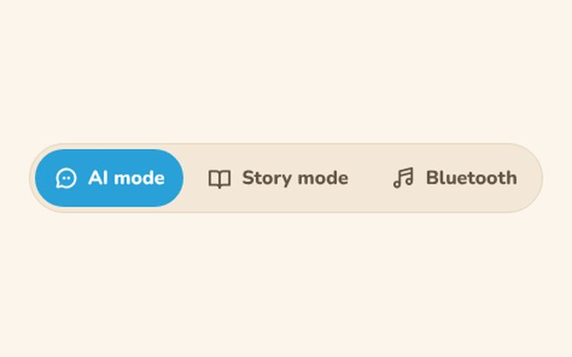
ModeSwitchA segmented control for Kheelu's three modes: AI mode, Story mode and Bluetooth.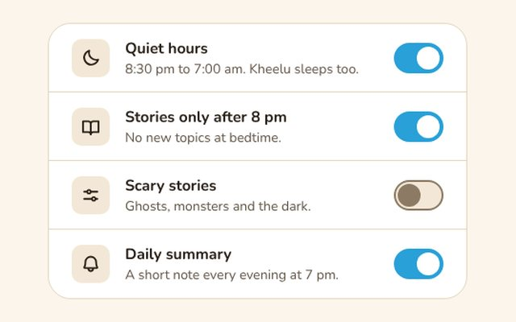
ParentControlA grouped list of labelled switches for the parent's settings: quiet hours, topics, daily summary and similar.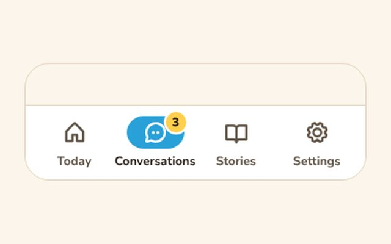
TabBarThe parent app's bottom navigation: 3–5 destinations, each an icon in a pill with a label underneath.Selling
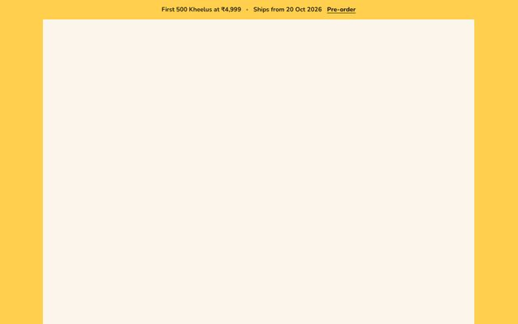
AnnouncementBarA slim sun-yellow strip above the nav for the offer and the ship date.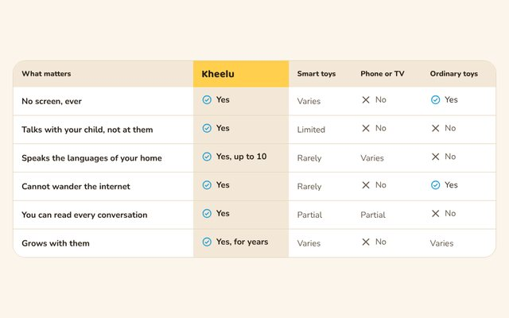
ComparisonTableA fair comparison table with Kheelu's column highlighted in sun and checks in Kheelu Blue.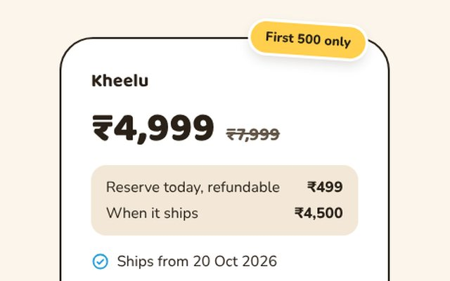
OfferCardThe pre-order box: price, the later price, the ₹499 refundable reserve split, perks, and the one chilli CTA, in a chunky toy-like card.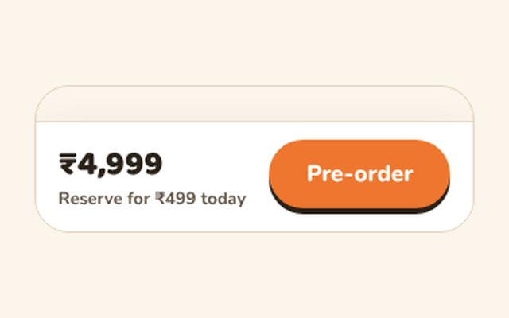
StickyBuyBarThe phone-only bottom bar with the price and a chilli Pre-order button, shown after the hero scrolls away.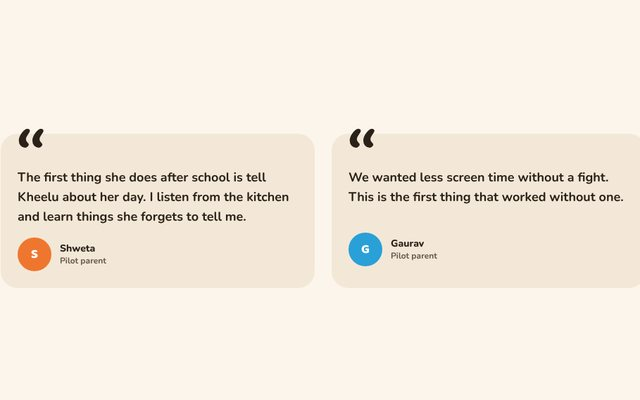
TestimonialA cream quote card with a handwritten quote mark, an initials avatar, and the name and role.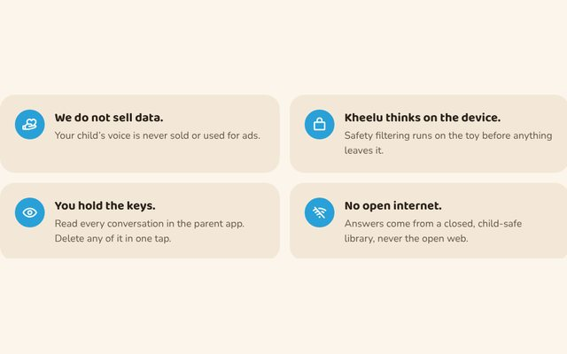
TrustListA two-by-two grid of cream panels, each with an icon in a Kheelu Blue circle, a short promise title and one line explaining how it works.Marketing
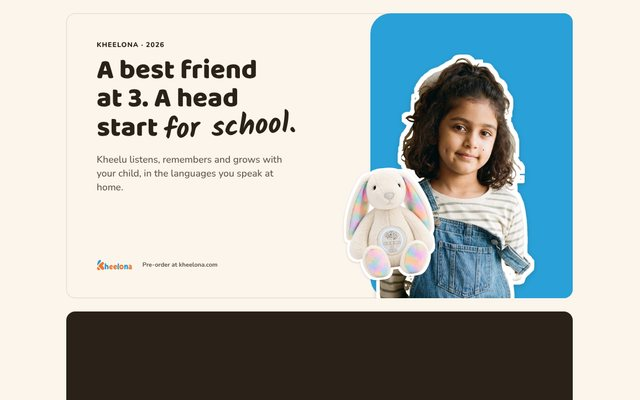
DeckSlideA 16:9 slide in three layouts: title (headline left, cast and Kheelu stickers on a brand-colour block right), statement (one sentence, often on the chalkboard) and facts (three numbers).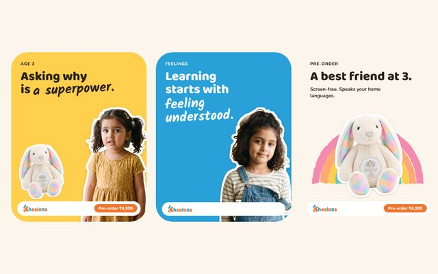
SocialPostA 4:5 social post (1080×1350 when exported) built from a brand-colour block, a cast sticker, an optional Kheelu sticker, a Baloo headline with one handwritten phrase, and the brand footer pill.